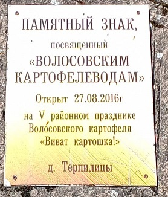
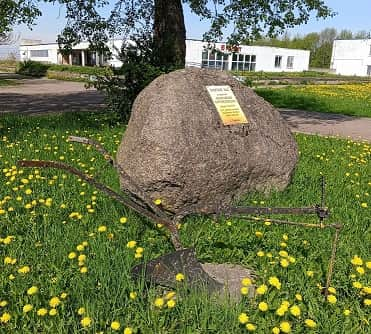

Терпилицы (по шведской карте 1676-го года Terpilitsa) впервые упомянут в Новгородской писцовой книге 1500 года как сельцо Терпеличи, один из узловых населенных пунктов с населением порядка двух тысяч человек.
Расположен на перекрестке дорог и видел всякое за свою многовековую историю.
В конце 19-го века усадьба, расположенная здесь, принадлежала семье баронов Врангель и была роскошна: - с ухоженным чистым прудом, цветниками и оранжереями, в которых выращивались персики и абрикосы. Об этом времени красочно написал Николай Георгиевич Врангель, (отец генерала Петра Врангеля). Здесь он провел самые счастливые годы детства.
На сегодня от пруда осталась пугающая сухая земленая яма. От оранжерей и цветников ничего не осталось.
В этом мистика какая-то: - не хочет природа цвести рядом с бездушностью, ленью и наплевательством.
В войну оккупанты организовали здесь молокозавод. Работал он эффективно: - молоко, масло, творог, сметана.
В советское время организовался совхоз по производству сельхозпродукции. Местечко ожило: - построились пятиэтажные дома с водой и канализацией, была построена очень приличная школа, даже "кафе" появилось.
На сегодня, здесь машино-тракторная станция с современными тракторами и сельхозоборудованием. Стоят могучие парники, явно непростые. Что там варащивается для меня загадка, но размеры позволяют пальмы разводить. Появился сетевой магазин очень приличный, приятно посетить. У людей появилась работа и поселок посветлел.
Если давать определение местам, то Терпилицы я бы назвал картофельной столицей Ленобласти. Здесь ее производят по современным технологиям. Продают и оптом и в розницу. Предприятие - очевидно прибыльное.
Однажды, Марк Солонин задал вопрос посетителям своего канала: - "Знаете ли вы хоть один памятный знак не связанный с жертвами и кровопролитием?"
Вот, полюбуйтесь! Памятный знак посвещенный трудовым людям в Терпилицах.
На переднем плане то самое "орало" из библейского "Перековать мечи на орала", что означает переход от войны к миру.
Можете приехать и освидетельствовать.

Одна странность - все время считал, первое слово "Освященный".
Оказалось - "Посвященный".
От чего возникла абберация в моей голове?
Или, все же, речь о церковном освящении?
Тот валун, тысячелетиями здесь располагаясь, видел всякое. Однако, быть освященным в лоне русской православной конфессии московского патриархата, стало новостью. Но из камня чёрт не выпрыгнул.
Вздохнул, - кто меня только не обожествлял... А будут еще сколько?! И продолжил сон.